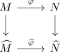
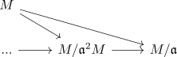

induced map for the completion of a module
Proposition
Let $A$ be a ring and $M$ an \(A\)-module, $\mathfrak{a} \subseteq A$ an ideal and $\widehat{A}, \widehat{M}$ the completion as ring resp. completion of the module. Then there exist natural induced morphisms
- \(A\)-linear $M \rightarrow \widehat{M}$
- \(\widehat{A}\)-linear $M \otimes_R \widehat{R} \rightarrow \widehat{M}$
natural in the sense that

commutes in $\mathrm{AMod}$ after applying the restriction of scalars to $\widehat{\varphi}$
Proof
existence
- follows from the universal property

- follows from the adjunction for extension of scalars restriction of scalars as left adjoint
naturality
- todo